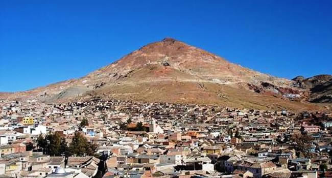
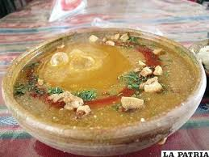
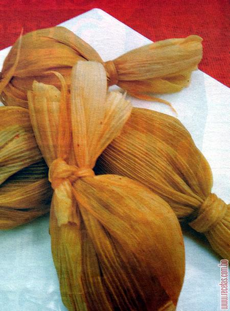

{{!< default}}
<div class="container">
	<div class="jumbotron">
		<h1>Bienvenido al Blog de Comida Boliviana de POTOSI.</h1>

		<p> <strong>KALAPURKA</strong>
	<div class="jumbotron">
Ingredientes: 
1 kilo de charque.
8 papas sipancachi (holandesa).
1/4 libra de harina de maíz blanco.
1/2 libra de harina willkaparu.
Ají colorado crudo y molido.
1 cebolla. 1 ajo.
Especias
Orégano, sal, comino, pimienta y chachacoma (hierba aromática que crece en el altiplano).
Otros, Piedras rodadas de río.
Preparación: 
Se combina todo, se hierve y se sirve con una piedra caliente burbujeando en el plato.

La kalapurka es un plato típico potosino. Consiste en una lagua (sopa espesa) hecha de harina de wilkaparu (maíz morado), sazonado con la hierba la chachacoma (de sabor parecido al pino).

La presentación del plato se la hace con una piedra de origen generalmente volcánico.<p>Kalapurka<a href='template/view/kalapurka.html' target='_blank'>Kalapurka</a>Vea mas fotos del plato.</p>


		<hr>
		<p> <strong>TAMAL TUPICEÑO</strong>
	<div class="jumbotron">
Ingredientes: 
1 kg de maíz seco
1 y 1/2 tazas de leche
1/2 kg de charque
1 cebolla repicada
2 cucharas de ají amarillo molido
Pizca de azúcar
Sal a gusto
Aceite cantidad necesaria
Agua cantidad necesaria
Para armar

Challas de choclo
Preparación: 
Remojar el maíz por dos días y dos noches, luego escurrir y moler en una procesadora, alternando con la leche, hasta formar una pasta. Reservar.

Cocinar el charque de res o de llama por unos 30 minutos en olla a presión, después sacar y procesar con un poco de agua, hasta lograr una pasta. Reservar.

Colocar una sartén con aceite al fuego y sofreír la cebolla hasta cristalizar, luego añadir el ají amarillo molido y sazonar con sal a gusto y pizca de azúcar.

Continuar a fuego medio e incorporar la pasta de charque, mezclar todo y seguir al fuego hasta conseguir un jigote.

Para el armado: Tomar dos chalas de choclo y formar la base de los tamales, al centro colocar una porción de pasta de maíz y encima acomodar una porción del jigote cerrar las chalas y amarrar con una tira de chala. Cocinar en una olla al vapor por unos 20 o 30 minutos.
		<p>Tamal Tupiceño<a href='template/view/tamal-tupiceño.html' target='_blank'>Tamal Tupiceño</a>Vea mas fotos del plato.</p>
		<hr>

		<p>Para mayor información envieme una consulta a:  <strong>edlamas95@gmail.com</strong>
		<hr>
		<p>
		</p>
	</div>
</div>
